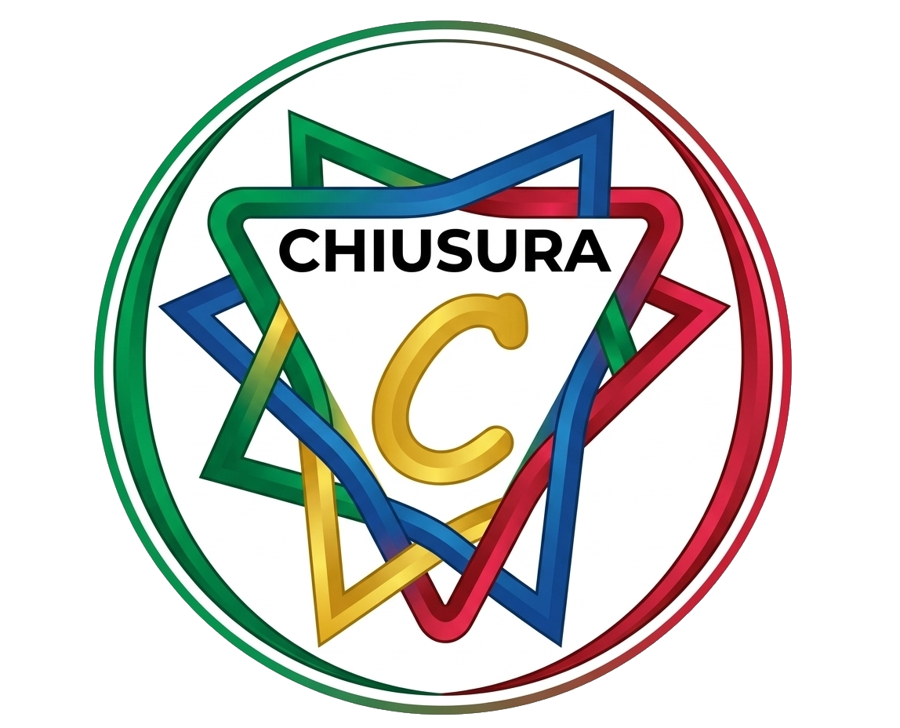
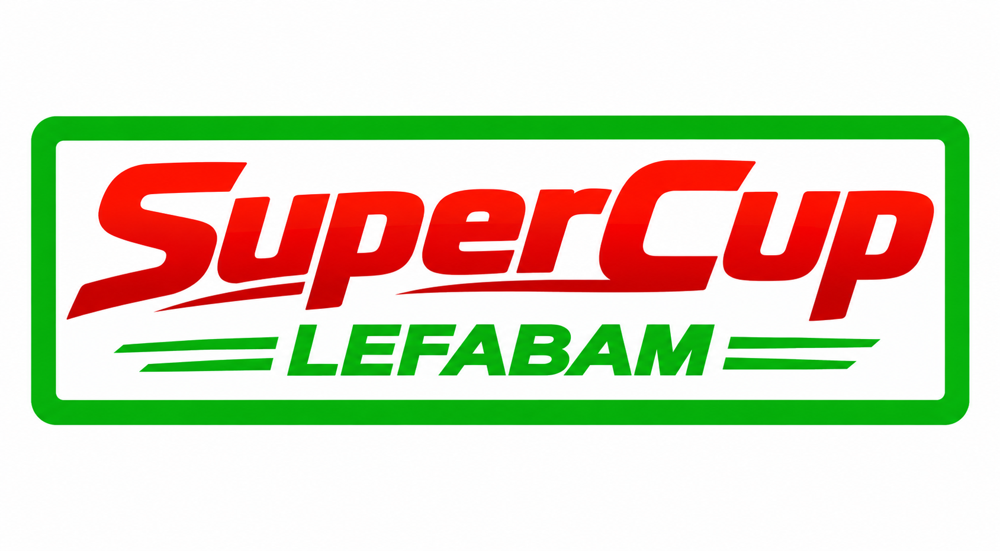

Serie Maxima
Il massimo campionato della Lega, con classifica generale della stagione.
Vai alla competizione →Lega Fantacalcio Barriera dell'M · Stagione 2026/27
Il massimo campionato della Lega, con classifica generale della stagione.
Vai alla competizione →
La competizione basata sull'andamento progressivo dei punteggi giornalieri.
Vai alla competizione →
Il girone finale a 8 squadre, con calendario e classifica della competizione.
Vai alla competizione →
La competizione dedicata alle squadre che non accedono al girone finale di Extra League.
Vai alla competizione →
Tabellone a eliminazione diretta con ottavi, quarti, semifinali e finale.
Vai al tabellone →
Il secondo torneo a eliminazione diretta della stagione 2026/27.
Vai al tabellone →
La sfida che assegna la Supercoppa di Lega.
Vai alla competizione →
I tre gironi di qualificazione e l'accesso alle fasi finali di Extra League e Lefabam Cup.
Vai alle qualificazioni →Tutti i vincitori delle competizioni della Lega Fantacalcio Barriera dell'M.
Consulta l'Albo d'Oro →